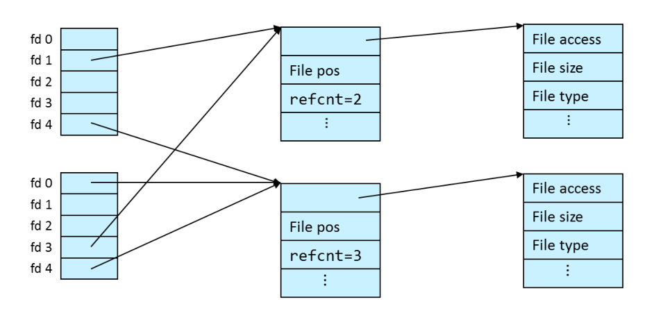
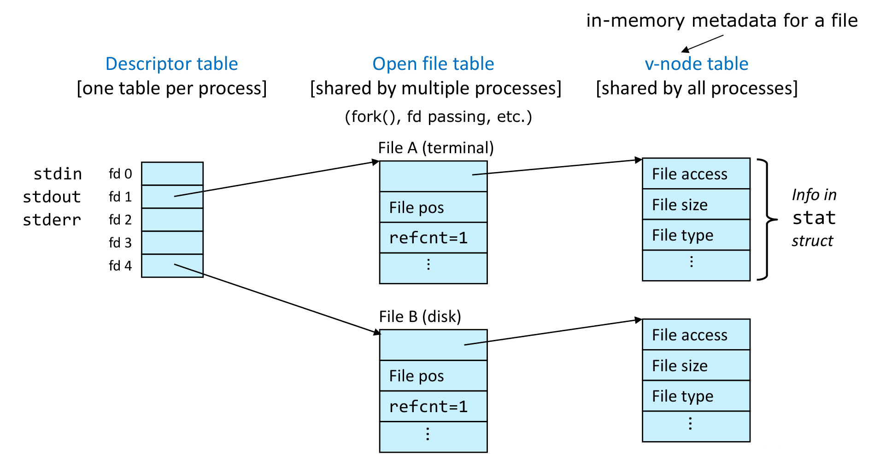
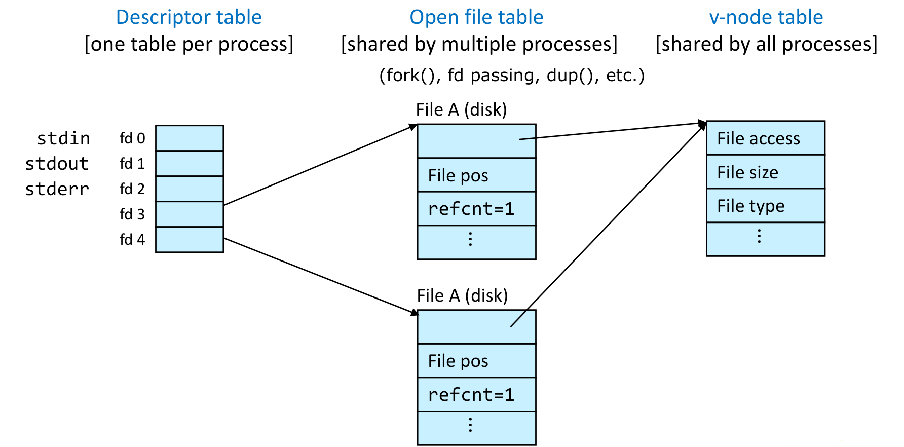
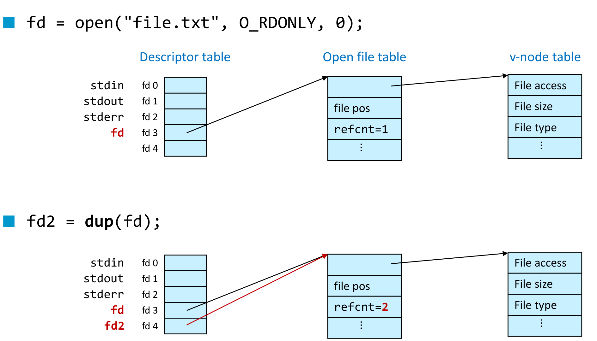
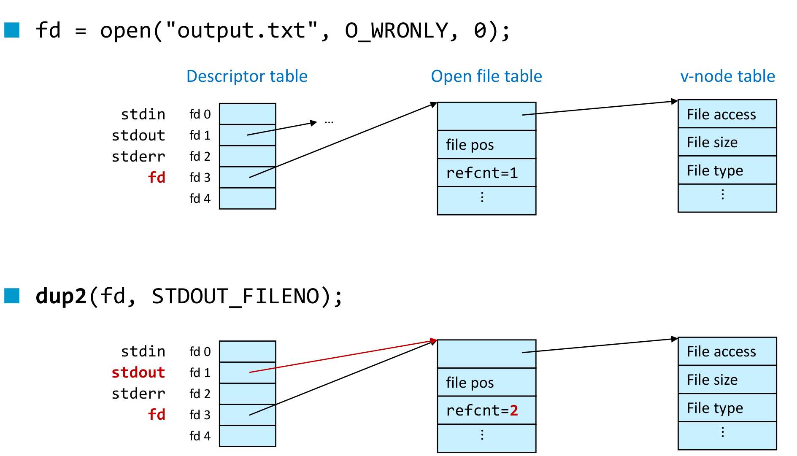

본 포스트는 서울대학교 컴퓨터공학부 시스템 프로그래밍(M1522.000800, System Programming, Fall 2026) 강의 자료 중 5강 — Input/Output: Files and Directories (총 26장)를 바탕으로, 강의를 처음 듣는 독자도 논리적 흐름을 따라갈 수 있도록 재구성한 것입니다. 원본 슬라이드는 영문으로 작성되어 있으며, 본문의 대섹션 구분은 강의 두 번째 슬라이드의 Class Outline(File Metadata → Directories → Kernel File Management → Summary)을 그대로 따랐습니다.
한 줄 요약 (TL;DR)
“열린 파일은 하나의 객체가 아니라 세 개의 표에 나뉘어 있고, 그 분할선이 어디에 그어져 있는지가 프로그램의 동작을 결정합니다.”
3강에서 “모든 것은 파일이다”라는 정의를 세우고 4강에서 그 파일을 읽고 쓰는 두 층(Unix I/O와 표준 I/O)을 보았다면, 이번 강의는 그 파일에 대해 커널이 무엇을 알고 있으며 그것을 어떻게 들고 있는가를 봅니다. 먼저 파일 이름은 그 파일을 담은 디렉토리에, 나머지 모든 메타데이터는 i-node에 저장된다는 분리를 확인하고, 그 i-node를 읽어 오는 유일한 창구인
struct stat과stat계열 호출을 정리합니다. 다음으로 디렉토리 역시 열어서 한 항목씩 읽는 대상임을opendir/readdir로 확인하고,dirfd와fstatat을 엮어ls -l이 하는 일을 스무 줄로 재현합니다. 마지막이 이번 강의의 핵심입니다 — 커널은 열린 파일을 디스크립터 표(프로세스마다 하나) · 열린 파일 표(프로세스 사이에서 공유) · v-node 표(전역에 하나) 라는 세 층으로 쪼개 들고 있으며, 같은 파일을 두 번open하면 파일 위치(file position)가 따로 놀고 한 번dup하면 함께 움직이는 차이가 전부 이 분할선에서 나옵니다. 그리고 그 분할선을 손으로 옮기는 도구가dup()과dup2(), 셸의>·<·|가 실제로 하는 일이 바로 그것입니다.
1. 파일 메타데이터 (File Metadata)
1.1 메타데이터란 무엇인가 (What Is Metadata?)
강의는 가장 평범한 정의에서 출발합니다.
- 메타데이터(metadata)는 데이터에 대한 데이터(data about data) 이고, 파일의 경우에는 파일에 관한 정보입니다. 구체적으로는 다음과 같은 것들입니다.
- 파일 이름(filename)
- 파일 타입(file type)
- 파일 크기(file size)
- 변경 시각 · 수정 시각 · 접근 시각 — 각각 메타데이터가 바뀐 시각(change), 내용이 바뀐 시각(modification), 읽거나 쓴 시각(access) 입니다. 이 셋의 차이는 1.6절에서 따로 다룹니다.
- 파일 접근 권한(file access permissions) — 3강에서 본
rwx아홉 비트입니다. - 그 밖에도 여럿 있습니다.
- 이 파일별 메타데이터는 커널이 관리(maintained by kernel) 합니다. 응용 프로그램이 파일 어딘가에 직접 적어 두는 것이 아닙니다.
여기서 이 절 전체의 요점이 되는 문장이 나옵니다.
모든 메타데이터가 같은 장소에 저장되는 것은 아닙니다(not all metadata is stored in the same place).
- 파일 이름(filename) — 그 파일을 담고 있는 디렉토리에 저장됩니다.
- 그 외의 모든 것 — 그 파일의 i-node에 저장됩니다.
- i-node(inode): Unix 파일시스템이 쓰는 내부 저장 단위(internal storage unit) 입니다.
이 한 줄이 3강에서 본 링크의 성질을 그대로 설명해 줍니다. 하드 링크가 같은 파일에 이름을 하나 더 붙이는 일인데도 크기·권한·타임스탬프가 하나로 묶여 움직였던 이유는, 이름만 디렉토리 쪽에 있고 나머지는 전부 i-node 하나에 모여 있기 때문입니다. 반대로 말하면 파일 이름은 struct stat에 들어 있지 않습니다 — 뒤에서 볼 stat()은 경로를 인자로 받으면서도 그 이름을 되돌려 주지는 않습니다. 이름은 이미 디렉토리 쪽의 정보이기 때문입니다.
1.2 struct stat
- 파일 메타데이터는
*stat계열(the*statfamily) 의 Unix I/O API 호출로 접근합니다. - 이 호출들은 메타데이터를
struct stat구조체에 담아 되돌려 줍니다.
강의가 제시하는 전체 정의는 다음과 같습니다.
struct stat {
dev_t st_dev; // device
ino_t st_ino; // inode number (i-number)
mode_t st_mode; // protection and file type
nlink_t st_nlink; // number of hard links
uid_t st_uid; // user ID of owner
gid_t st_gid; // group ID of owner
dev_t st_rdev; // device id (if special file)
off_t st_size; // total size, in bytes
unsigned long st_blksize; // preferred blocksize for filesystem I/O
unsigned long st_blocks; // number of 512B blocks allocated
// high-precision timestamps (precision: nanoseconds; since Linux kernel >=2.6)
struct timespec st_atim; // time of last access
struct timespec st_mtim; // time of last access
struct timespec st_ctim; // time of last status change
// low-precision timestamps (precision: seconds; always available)
time_t st_atime; // time of last access
time_t st_mtime; // time of last modification
time_t st_ctime; // time of last status (inode) change
};- 문서는
stat(2)와inode(7)두 개의 매뉴얼 페이지에 나뉘어 있습니다. 구조체와 호출 규약은stat(2)에, 각 필드가 i-node의 무엇을 반영하는지는inode(7)에 있습니다. - 호출 형태는 단순합니다 —
stat("filename", &sb);처럼 경로와 채워 넣을 구조체의 주소를 넘깁니다. - 슬라이드의 주석 중
st_mtim에 붙은// time of last access는 바로 위st_atim의 주석이 그대로 이어진 것으로 보입니다. 같은 강의의 다음 슬라이드가mtim[e]를 파일 데이터가 마지막으로 갱신된 시각으로 명확히 정의하고 있으므로, 1.6절의 정의를 기준으로 읽으면 됩니다.
st_?tim과 st_?time)
같은 시각이 두 벌 들어 있다는 점에 주의합니다.
st_atim·st_mtim·st_ctim— 끝에e가 없는 쪽입니다.struct timespec타입이며 나노초 정밀도를 갖습니다.st_atime·st_mtime·st_ctime— 끝에e가 있는 쪽입니다.time_t타입이며 초 정밀도입니다.
앞으로 두 벌을 한꺼번에 가리킬 때는 강의의 표기를 따라 st_?tim, ctim[e] 처럼 씁니다.
- 강의 표지 슬라이드에 실린 축약본은
st_blksize와st_blocks의 타입을 각각blksize_t,blkcnt_t로 적고 있습니다. 위 정의의unsigned long과 같은 대상을 가리키는 전용 타입 이름입니다.
1.3 st_mode — 타입과 권한 (File Type and Access Permissions)
st_mode는 파일의 타입과 접근 권한을 함께 인코딩합니다. 하나의 정수 안에 3강에서 본d/-/l같은 타입 정보와rwxrwxrwx아홉 비트가 같이 들어 있는 셈입니다.- 따라서 이 필드는 직접 비트를 뜯어보는 대신 매크로와 마스크로 다룹니다.
타입 판별 — S_IS***() 매크로
if (S_ISREG(sb.st_mode)) // regular fileS_IS***(sb.st_mode)형태의 매크로를 편의를 위해(for convenience) 씁니다. 타입 비트가 몇 번째 자리에 어떤 폭으로 들어 있는지를 알 필요가 없어집니다.
권한 검사 — S_IR/W/X*** 마스크
if (sb.st_mode & S_IRUSR) // owner has read permission- 권한은 매크로가 아니라 마스크를
&로 씌워 확인합니다.S_IRUSR는 소유자(USR)의 읽기(R) 비트를 뜻하며, 같은 규칙으로S_IWGRP(그룹 쓰기),S_IXOTH(기타 실행)처럼 조합됩니다.
권한은 서로 독립적인 비트들의 집합이라 & 하나로 “이 비트가 서 있는가”를 물으면 충분합니다. 반면 파일 타입은 여러 값 중 하나입니다 — 일반 파일이면서 동시에 디렉토리일 수는 없습니다. 즉 타입은 비트 집합이 아니라 여러 비트를 묶어 읽어야 하는 필드이고, 그 묶음을 꺼내 비교하는 일을 대신해 주는 것이 S_IS***() 매크로입니다. 한쪽은 “비트가 켜져 있는가”, 다른 한쪽은 “필드 값이 무엇인가”라는 서로 다른 질문이기 때문에 문법도 갈립니다.
1.4 st_uid / st_gid — 소유자 (Owner)
st_uid와st_gid에 들어 있는 것은 숫자 ID뿐입니다.ls -l이 보여 주는devel,prof같은 이름은 i-node에 없습니다.- 숫자를 이름으로 바꾸려면 별도의 조회 함수를 씁니다.
getpwuid(sb.st_uid)— 사용자 정보를 가져옵니다.getgrgid(sb.st_gid)— 그룹 정보를 가져옵니다.
이름이 i-node가 아니라 별도의 데이터베이스(/etc/passwd, /etc/group)에 있다는 뜻이므로, 같은 디스크를 다른 시스템에 꽂으면 같은 UID가 다른 이름으로 보일 수 있습니다. 파일이 들고 있는 것은 어디까지나 숫자입니다.
1.5 st_size vs. st_blocks — 희소 파일 (Sparse Files)
크기를 나타내는 필드가 둘이라는 점이 이 절의 출발점입니다.
st_size— 파일의 총 크기(total size, in bytes), 즉 3강의 정의로 말하면 바이트 열의 길이 \(m\)입니다. 논리적인 크기입니다.st_blocks— 실제로 할당된 512바이트 블록의 개수(number of 512B blocks allocated) 입니다. 물리적으로 차지한 양입니다.
두 값은 보통 맞아떨어지지만, 반드시 그런 것은 아닙니다.
파일이 희소(sparse) 하다는 것은 다음 부등식이 성립한다는 뜻입니다.
\[ \frac{\texttt{st\_size}}{512} \;>\; \texttt{st\_blocks} \]
즉 선언된 크기를 512바이트 블록으로 환산한 수보다 실제 할당된 블록 수가 적은 상태입니다. 희소 파일은 0이 아닌 바이트를 아주 일부만 담고 있는 파일(a sparse file contains a small portion of non-zero bytes) 이며, 나머지 0으로 채워진 구간에 대해서는 파일시스템이 블록을 아예 할당하지 않습니다.
\(\texttt{st\_size}\)의 단위는 바이트이고 \(\texttt{st\_blocks}\)의 단위는 512바이트 블록이라 그대로는 비교할 수 없습니다. \(512\)로 나누는 것은 두 값을 같은 단위로 맞추는 환산일 뿐이며, 부등식이 뜻하는 바는 결국 “이 파일이 주장하는 크기만큼의 저장 공간이 실제로 잡혀 있지는 않다” 는 한 문장입니다.
st_blksize가 파일시스템이 선호하는 I/O 단위인 것과 달리 st_blocks의 512바이트는 파일시스템의 블록 크기와 무관하게 고정된 환산 단위라는 점에도 주의합니다. 두 필드의 “블록”은 같은 말이 아닙니다.
1.6 타임스탬프 (Timestamps)
정밀도의 두 벌
st_?tim— Linux 2.6부터 제공되는 나노초 정밀도(nanosecond precision since Linux 2.6) 입니다.st_?time— 2.6 이전의 Unix/Linux가 쓰던 저해상도 타임스탬프(low-resolution timestamps) 로, 초 단위 정밀도입니다. 대신 언제나 사용할 수 있습니다.
생성 시각은 없습니다
- 전통적으로 Unix 파일시스템은 파일의 생성 시각(creation date, birth date)을 기록하지 않았습니다.
- 최신 파일시스템은 지원할 수도 있으며, 그 경우
statx()시스템 호출로 가져옵니다.
여기서 struct stat에 왜 생성 시각 필드가 없는지가 설명됩니다. 없는 것이 아니라 애초에 기록되지 않았기 때문이며, 뒤늦게 지원하게 된 파일시스템을 위해 확장된 구조체(struct statx)를 쓰는 새 호출이 따로 생긴 것입니다.
ctim[e] vs. mtim[e] — 가장 자주 혼동되는 한 쌍
| 필드 | 정의 | 바뀌는 순간의 예 |
|---|---|---|
ctim[e] |
파일 i-node가 마지막으로 갱신된 시각(file meta data) | chmod, chown, 하드 링크 생성·삭제 — 그리고 내용을 바꿔도 크기·블록 수가 갱신되므로 함께 바뀝니다 |
mtim[e] |
파일 데이터가 마지막으로 갱신된 시각 | 파일에 쓰기(write) |
c는 creation이 아닙니다
ctime의 c를 creation으로 읽는 오해가 흔합니다. change(상태 변경) 입니다. 바로 위에서 확인했듯 Unix는 전통적으로 생성 시각을 아예 기록하지 않았으므로, ctime이 생성 시각일 수는 없습니다.
두 시각의 방향도 비대칭입니다. 내용을 바꾸면 mtime과 ctime이 함께 바뀌지만(데이터가 바뀌면서 크기·블록 수 같은 i-node 정보도 갱신되므로), chmod로 권한만 바꾸면 ctime만 바뀌고 mtime은 그대로입니다. 백업 도구가 “바뀐 파일”을 고를 때 어느 쪽을 보느냐에 따라 결과가 달라지는 이유가 여기에 있습니다.
atim[e] — 읽기만 해도 쓰기가 발생하는 필드
- 파일에 마지막으로 접근한 시각(time stamp of last access) 입니다.
- 성능상의 이유로 꺼 두는 경우가 많습니다(often disabled for performance reasons). 파일시스템을
-o noatime옵션으로 마운트하면 됩니다.
atime을 정직하게 갱신하면 파일을 읽을 때마다 i-node에 쓰기가 한 번씩 발생합니다. 읽기 전용 작업이 디스크 쓰기를 유발하는 셈이라, 파일을 많이 읽는 서버에서는 그 자체가 무시할 수 없는 부담이 됩니다.
3강의 마운트 옵션 슬라이드에 noatime과 relatime이 나란히 등장했던 이유가 이것입니다. noatime은 갱신을 아예 끄고, relatime은 atime이 mtime이나 ctime보다 이전일 때만 갱신해 “마지막으로 읽은 뒤에 수정되었는가”라는 질문에는 답할 수 있게 하면서 쓰기 횟수를 줄이는 절충안입니다.
1.7 메타데이터 접근 API (C Standard Library Functions)
헤더는 sys/stat.h 하나입니다. 같은 일을 하는 다섯 개의 변종이 있고, “대상을 무엇으로 지정하는가” 가 그 차이의 전부입니다.
| Operation | API | Remarks |
|---|---|---|
| 파일 메타데이터 조회 (Retrieve file metadata) |
int stat(const char *pathname, struct stat *statbuf) |
|
int lstat(const char *pathname, struct stat *statbuf) |
심볼릭 링크를 따라가지 않습니다 (does not follow symbolic links) |
|
int fstat(int fd, struct stat *statbuf) |
||
int fstatat(int dirfd, const char *pathname, struct stat *statbuf, int flags) |
디렉토리 안의 파일들을 stat할 때 유용합니다(useful when stat-ing files in a directory) |
|
int statx(int dirfd, const char *pathname, int flags, unsigned int mask, struct statx *statxbuf) |
확장된 파일 상태를 가져옵니다 (get extended file status) |
stat— 경로로 지정합니다. 가장 기본형입니다.lstat— 역시 경로로 지정하지만 링크를 따라가지 않습니다. 경로의 마지막 요소가 심볼릭 링크일 때,stat은 가리켜진 대상의 정보를 주고lstat은 링크 파일 자신의 정보를 줍니다. 3강에서 소프트 링크의 크기가 대상 파일의 크기가 아니라 경로 문자열의 길이였던 것을 확인할 수 있게 해 주는 호출이 바로lstat입니다.fstat— 이미 열려 있는 파일 디스크립터로 지정합니다. 경로를 다시 해석할 필요가 없습니다.fstatat— 디렉토리 디스크립터dirfd를 기준으로 한 상대 경로로 지정합니다.flags로 링크 추적 여부 등을 조절합니다.statx—fstatat과 같은 방식으로 대상을 지정하되,mask로 필요한 필드만 골라 요청하고 결과를struct statx에 받습니다. 생성 시각을 가져올 수 있는 것이 이 호출입니다.
fstatat의 dirfd가 왜 필요한가
디렉토리를 순회하며 각 항목을 stat하려면 보통 "디렉토리경로/파일이름" 문자열을 매번 이어 붙여야 합니다. 문자열 조립 비용도 비용이지만, 더 중요한 것은 커널이 그 긴 경로를 처음부터 다시 해석해야 한다는 점입니다.
fstatat은 이미 열어 둔 디렉토리를 기준점으로 고정해 두고 그 아래의 짧은 이름 하나만 넘기게 해 줍니다. 문자열을 붙일 필요가 없어지고, 경로 해석도 그 디렉토리에서 시작합니다. 2.2절의 예제가 dirfd()로 디렉토리 디스크립터를 꺼내 fstatat에 넘기는 이유가 정확히 이것입니다.
2. 디렉토리 (Directories)
3강에서 디렉토리는 이름과 i-number의 짝을 담은 파일이라고 배웠습니다. 그러면 그 파일은 어떻게 읽을까요. 아래는 강의가 디렉토리 절을 열며 보여 주는 트리 구조로, 앞으로 프로그램이 한 항목씩 걸어 내려가야 할 대상입니다.
|-a
| `-b
| |-c
| | `-d
| `-f
|-dir1
| `-seventyfive
|-dir2
| |-three
| `-seven
`-dir3
|-five
`-twentytwo2.1 디렉토리 API (C Standard Library Functions)
헤더는 dirent.h, sys/types.h 둘입니다.
| Operation | API | Variants |
|---|---|---|
| Open | DIR* opendir(const char *name) |
fdopendir |
| Read entry | struct dirent* readdir(DIR *dirp) |
|
| Close | int closedir(DIR *dirp) |
|
| Retrieve descriptor | int dirfd(DIR *dirp) |
|
| Make directory | int mkdir(const char *pathname, mode_t mode) |
mkdirat |
opendir→readdir→closedir의 흐름은 4강에서 본fopen→fread→fclose와 정확히 같은 모양입니다. 디렉토리도 열고, 순차적으로 읽고, 닫는 대상입니다.readdir는 한 번에 항목 하나를 돌려주며, 더 읽을 항목이 없으면NULL을 돌려줍니다. 되돌아오는struct dirent가 담고 있는 것은 이름(d_name) 이지 메타데이터가 아닙니다 — 1.1절의 분리가 API 형태에 그대로 드러나는 지점입니다. 크기나 권한이 필요하면 따로stat계열을 불러야 합니다.dirfd는DIR*에서 밑에 깔린 파일 디스크립터를 꺼냅니다. 이것이 있어야fstatat의 기준점을 만들 수 있습니다.- 변종(Variants) 은 지정 방식만 바꾼 것입니다.
fdopendir는 경로 대신 이미 열린 디스크립터로 디렉토리 스트림을 만들고,mkdirat은fstatat과 같은 방식으로 디렉토리 디스크립터 기준 상대 경로에 디렉토리를 만듭니다.
DIR* vs. int fd)
opendir가 돌려주는 것은 정수 디스크립터가 아니라 DIR* 라는 불투명 포인터입니다. 4강의 FILE*와 같은 성격으로, 라이브러리가 관리하는 스트림 핸들입니다.
즉 디렉토리 읽기에도 두 층이 그대로 있습니다 — 아래에는 커널이 준 정수 디스크립터가 있고, 위에는 DIR*가 그것을 감싸고 있습니다. dirfd()는 그 껍질을 벗겨 아래층을 꺼내는 함수이며, 그래서 fstatat·fchdir처럼 디스크립터를 받는 시스템 호출과 디렉토리 스트림을 연결할 수 있게 해 줍니다.
2.2 예시: 디렉토리와 파일 메타데이터 접근 (Example: Accessing Directories and File Metadata)
지금까지의 조각을 모두 엮으면 ls 비슷한 것이 나옵니다. 강의가 제시하는 statter.c입니다.
#include <…>
int main(int argc, char *argv[])
{
DIR *dir = opendir(argc > 1 ? argv[1] : "."); // 인자가 없으면 현재 디렉토리
if (dir == NULL) { perror("Cannot open directory"); return EXIT_FAILURE; }
int dd = dirfd(dir); // fstatat의 기준점이 될 디스크립터
struct dirent *e;
errno = 0; // 열거 실패와 목록 끝을 구분하기 위해 초기화
while ((e = readdir(dir)) != NULL) {
struct stat sb;
if (fstatat(dd, e->d_name, &sb, 0) < 0) { // 이름만으로 메타데이터 조회
perror("Cannot stat file");
} else {
printf(" %-32s %10ld\n", e->d_name, sb.st_size);
}
errno = 0;
}
if (errno != 0) perror("Cannot enumerate directory"); // NULL이 오류 때문이었는지 확인
closedir(dir);
return EXIT_SUCCESS;
}실행하면 다음과 같습니다.
$ ./statter /
opt 4096
sys 0
proc 0
devnull 64
usr 4096
lib64 12288
home 4096
. 4096
data 4096
var 4096
lost+found 16384
.. 4096
dev 4300
...이 짧은 프로그램에 이번 강의 전반부가 거의 다 들어 있습니다.
opendir(argc > 1 ? argv[1] : ".")— 인자가 있으면 그 경로를, 없으면 현재 디렉토리.를 엽니다. 3강에서.이 장식이 아니라 실재하는 디렉토리 엔트리라고 했던 것이 여기서 그대로 인자로 쓰입니다.dirfd(dir)로 꺼낸dd를fstatat(dd, e->d_name, &sb, 0)에 넘깁니다. 덕분에"/"와"opt"를 이어 붙여"/opt"를 만드는 과정이 통째로 사라집니다.readdir는 이름만 주므로 크기를 얻으려면 반드시fstatat이 한 번 더 필요합니다. 두 API가 나뉘어 있다는 사실이 코드 모양으로 드러납니다.- 출력에
.과..이 그대로 섞여 나옵니다.readdir는 걸러 주지 않습니다 — 디렉토리에 실제로 들어 있는 항목이기 때문이며,ls가 이를 숨기는 것은ls쪽의 선택입니다. - 출력 순서가 알파벳순도 아니고 생성순도 아니라는 점도 눈여겨볼 만합니다.
readdir는 디렉토리에 저장된 순서대로 돌려줄 뿐이며, 정렬은 호출자의 몫입니다.
errno = 0이 두 번 나오는 이유
readdir는 목록이 끝났을 때도 NULL을, 오류가 났을 때도 NULL을 돌려줍니다. 반환값만으로는 둘을 구별할 수 없습니다.
그래서 이 코드는 호출 직전마다 errno를 0으로 지워 두고, 반복문을 빠져나온 뒤 errno가 여전히 0이면 정상 종료, 아니면 열거 실패로 판정합니다. 반복문 안쪽 끝에 errno = 0;이 한 번 더 있는 것은 중간의 fstatat 실패가 남긴 errno가 종료 판정을 오염시키지 않게 하기 위한 것입니다.
3. 커널의 파일 관리 (Kernel File Management)
여기서부터가 이번 강의의 핵심입니다. 질문은 하나입니다 — open이 돌려준 그 작은 정수 하나 뒤에 커널은 무엇을 두고 있는가.

fd 0~fd 4가 적힌 상자 두 개는 서로 다른 두 프로세스의 디스크립터 표이고, 가운데의 File pos·refcnt를 담은 상자 두 개는 열린 파일 표의 항목, 오른쪽의 File access·File size·File type을 담은 상자 두 개는 v-node 표의 항목입니다. 화살표를 따라가 보면 위쪽 프로세스의 fd 1과 아래쪽 프로세스의 fd 0이 같은 열린 파일 표 항목을 가리키고 있고, 그 항목의 참조 계수가 refcnt=2, 아래쪽 항목은 refcnt=3 으로 적혀 있습니다. 즉 참조 계수는 “몇 개의 디스크립터 칸이 이 항목을 가리키고 있는가” 를 세는 숫자이며, 서로 다른 프로세스의 디스크립터가 같은 항목을 공유할 수 있다는 사실이 이 그림의 요지입니다. 이 공유가 가능한 이유는 다음 그림의 주석이 밝히듯 열린 파일 표가 fork()·디스크립터 전달 등을 통해 프로세스 사이에서 공유되기 때문입니다.3.1 커널이 열린 파일을 표현하는 방법 (How the Unix Kernel Represents Open Files)
강의는 가장 단순한 상황부터 그립니다 — 서로 다른 두 파일을 가리키는 두 개의 디스크립터입니다. 디스크립터 1(stdout)은 터미널을, 디스크립터 4는 열린 디스크 파일을 가리킵니다.

Descriptor table은 [one table per process]로 프로세스마다 하나씩, Open file table은 [shared by multiple processes]로 여러 프로세스가 공유(괄호 안의 fork(), fd passing, etc.가 공유가 생기는 경로입니다), v-node table은 [shared by all processes]로 시스템 전체에 하나입니다. 왼쪽 표의 칸에는 fd 0~fd 4가 붙어 있고 맨 위 세 칸에 stdin·stdout·stderr 라는 이름이 달려 있어, 이 셋이 특별한 존재가 아니라 그냥 0·1·2번 칸임을 보여 줍니다. fd 1에서 나온 화살표는 File A (terminal) 항목으로, fd 4에서 나온 화살표는 File B (disk) 항목으로 이어지며, 두 항목은 각각 File pos(그 디스크립터가 파일 어디를 가리키는지)와 refcnt=1(자신을 가리키는 디스크립터 칸의 수) 을 담고 있습니다. 두 항목의 화살표는 다시 서로 다른 v-node 항목으로 이어지고, 오른쪽 위의 in-memory metadata for a file 이라는 주석이 v-node가 무엇인지를, 오른쪽의 중괄호와 Info in stat struct 라는 이탤릭 주석이 그 내용이 곧 1장에서 본 struct stat의 내용임을 지목합니다. 요컨대 위치는 열린 파일 표에, 파일 자체의 성질은 v-node 표에 있다는 역할 분담이 이 그림의 핵심입니다.세 층의 역할과 공유 범위를 정리하면 다음과 같습니다.
| 표 | 공유 범위 | 담는 것 |
|---|---|---|
| 디스크립터 표 (Descriptor table) |
프로세스마다 하나 [one table per process] |
정수 디스크립터 번호 → 열린 파일 표 항목으로 가는 포인터 |
| 열린 파일 표 (Open file table) |
여러 프로세스가 공유 [shared by multiple processes] — fork(), 디스크립터 전달 등 |
파일 위치(File pos), 참조 계수(refcnt) 등 |
| v-node 표 (v-node table) |
모든 프로세스가 공유 [shared by all processes] |
파일의 메모리 내 메타데이터 — 접근 권한 · 크기 · 타입 등, 곧 struct stat의 내용 |
이 분할에서 곧바로 따라 나오는 결론이 몇 가지 있습니다.
stdin·stdout·stderr는 특별한 객체가 아닙니다. 디스크립터 표의 0·1·2번 칸일 뿐입니다. 그러니 그 칸의 내용을 바꿔치기할 수만 있다면 표준 출력의 목적지를 바꾸는 일도 가능해집니다 — 3.3절이 이 실마리를 그대로 받습니다.- 파일 위치는 파일의 성질이 아닙니다.
File pos는 v-node가 아니라 열린 파일 표에 있습니다. 같은 파일을 여러 번 열면 위치가 여러 개 생긴다는 뜻입니다. - 파일의 성질은 열 때마다 복제되지 않습니다. 크기·권한·타입은 v-node 표에 단 하나뿐이므로, 어느 디스크립터로
fstat을 하든 같은 답이 나옵니다.
하나로 합쳐 두었다면 둘 중 하나는 반드시 틀립니다.
File pos를 v-node에 두면 같은 파일을 두 번 연 두 프로그램이 서로의 읽기 위치를 밀어 버리게 됩니다. 반대로 파일 크기나 권한을 열린 파일 표에 두면 같은 파일의 사본이 여럿 생겨 한쪽에서 늘어난 크기를 다른 쪽이 모르게 됩니다.
“열 때마다 달라지는 것”과 “파일에 붙어 있는 것”을 서로 다른 층에 둔 것이 이 구조의 전부이며, 그 사이에 디스크립터 표를 한 겹 더 둔 덕분에 여러 디스크립터가 같은 열림 상태를 가리키는 일(dup)까지 표현할 수 있게 됩니다.
3.2 파일 공유 (File Sharing)
앞의 그림이 서로 다른 두 파일이었다면, 이번에는 같은 파일을 두 번 여는 경우입니다.
- 두 개의 서로 다른 디스크립터가, 서로 다른 두 개의 열린 파일 표 항목을 거쳐 같은 디스크 파일을 공유합니다(Two distinct descriptors sharing the same disk file through two distinct open file table entries).
- 이런 상황이 만들어지는 가장 흔한 경우는 같은 파일 이름으로
open을 두 번 호출하는 것입니다.

File A (disk) 로 같은 파일을 가리키며(앞 그림에서는 File A (terminal)과 File B (disk)로 서로 달랐습니다), 둘째, 두 항목에서 나온 화살표가 오른쪽의 같은 v-node 항목 하나로 모입니다(앞 그림에서는 서로 다른 두 v-node로 갈라졌습니다). 왼쪽 디스크립터 표의 fd 3과 fd 4가 각각 위·아래 항목으로 갈라져 있고, 두 항목 모두 자기만의 File pos를 갖고 refcnt=1 입니다. 즉 파일 자체는 하나(v-node 하나)인데 읽기·쓰기 위치는 둘이라는 상태이며, 이것이 “같은 파일을 두 번 열었다”는 말의 정확한 의미입니다. 열린 파일 표 제목 아래의 괄호에 앞 그림의 fork(), fd passing 옆으로 dup()이 추가되어 있는 점도 눈여겨볼 만한데, 이는 3.5절에서 볼 또 다른 공유 경로를 예고합니다.이 그림에서 읽어야 할 것은 두 층에서 서로 다른 답이 나온다는 사실입니다.
- v-node는 하나 — 두 디스크립터로
fstat을 하면 같은 크기, 같은 권한이 나옵니다. 파일은 하나이기 때문입니다. - 열린 파일 표 항목은 둘 — 각자 자기만의
File pos를 갖습니다.fd 3으로 100바이트를 읽어도fd 4의 위치는 0에 그대로 머뭅니다.
3.3 I/O 리다이렉션 (I/O Redirection)
- I/O 리다이렉션은 Unix의 핵심 개념 중 하나입니다(one of the core concepts of Unix).
$ ls > output.txt
$ ls | sort -R
$ cat < input.txt- 그리고 강의는 질문 하나를 던집니다 — 셸은 I/O 리다이렉션을 어떻게 구현할까요?(How does a shell implement I/O redirection?)
답의 재료는 이미 3.1절에 다 나왔습니다. ls는 자기가 파일로 출력한다는 사실을 모릅니다. 그냥 printf로 1번 디스크립터에 쓸 뿐입니다. 그렇다면 리다이렉션이란 ls를 고치는 일이 아니라, ls가 시작되기 전에 1번 칸이 무엇을 가리키는지를 바꿔 두는 일이어야 합니다. 디스크립터 표는 프로세스마다 하나씩 있으므로 그 조작은 다른 프로그램에 아무런 영향도 주지 않습니다.
남은 것은 “디스크립터 표의 특정 칸을 원하는 열린 파일 표 항목으로 바꿔치기하는 도구” 하나뿐이고, 그것이 다음 절의 주제입니다.
3.4 파일 디스크립터 조작 (File Descriptor Manipulation)
헤더는 unistd.h 입니다.
| Operation | API | Remarks |
|---|---|---|
| 디스크립터 복제 (Duplicate file descriptor) |
int dup(int oldfd) |
돌려받은 디스크립터는 oldfd와 같은 열린 파일 표 항목을 가리킵니다(Returned fd points to same entry in open file table as oldfd) |
| 특정 번호로 복제 (Duplicate file descriptor to specific fd) |
int dup2(int oldfd, int newfd) |
newfd의 항목이 oldfd의 값으로 덮어써집니다(Entry in newfd is overwritten with value in oldfd) |
| 파일 스트림의 디스크립터 조회 (Retrieve file descriptor of file stream) |
int fileno(FILE *stream) |
- 두 복제 함수의 차이는 “번호를 누가 고르는가” 입니다.
dup은 커널이 비어 있는 가장 작은 번호를 골라 돌려주고,dup2는 호출자가 번호를 지정합니다. dup2는 지정한 번호가 이미 쓰이고 있으면 그것을 먼저 닫습니다. “덮어쓴다(overwritten)”는 말의 의미가 이것이며, 리다이렉션에 쓸 수 있는 함수가dup이 아니라dup2인 이유이기도 합니다. 1번 칸을 정확히 겨냥할 수 있어야 표준 출력을 바꿀 수 있습니다.fileno는 4강에서 본FILE*스트림에서 밑에 깔린 정수 디스크립터를 꺼냅니다. 2.1절의dirfd와 정확히 같은 역할이며, 버퍼링된 상위 층과 시스템 호출 층을 잇는 통로입니다.
dup이라는 이름 때문에 열린 파일 표 항목이 복사된다고 오해하기 쉽습니다. 그렇지 않습니다. 표의 바로 위 설명 그대로, 복제된 디스크립터는 원래와 같은 항목을 가리킬 뿐(points to same entry) 입니다.
그래서 File pos가 공유됩니다. 이것이 “같은 파일을 두 번 open”(3.2절)과 “한 번 open한 뒤 dup”의 결정적인 차이이며, 3.7절의 두 퍼즐이 묻는 것도 정확히 이 차이입니다.
3.5 dup() — 커널이 번호를 고르는 복제

dup()의 전후를 두 개의 스냅샷으로 보여 주는 그림입니다. 위쪽은 fd = open("file.txt", O_RDONLY, 0); 직후의 상태로, 디스크립터 표에서 빨간 글씨 fd가 붙은 fd 3 칸이 열린 파일 표의 항목 하나를 가리키고 그 항목의 참조 계수는 refcnt=1 입니다. fd 0~fd 2에는 여전히 stdin·stdout·stderr가 달려 있어 3번이 비어 있는 가장 작은 번호였음을 알 수 있습니다. 아래쪽은 fd2 = dup(fd); 를 실행한 뒤로, 달라진 곳은 셋입니다 — 첫째, 디스크립터 표에 빨간 글씨 fd2가 붙은 fd 4 칸이 새로 쓰이고(다시 한번 비어 있는 가장 작은 번호입니다), 둘째, 그 칸에서 나온 빨간 화살표가 fd 3의 검은 화살표와 정확히 같은 항목으로 들어가며, 셋째, 그 항목의 참조 계수가 refcnt=2(빨간색) 로 늘었습니다. 열린 파일 표에 새 항목이 생기지 않았다는 점이 이 그림의 핵심입니다 — 두 디스크립터가 같은 file pos를 공유하므로, 한쪽으로 읽으면 다른 쪽의 위치도 함께 밀립니다. 오른쪽 v-node 항목이 그대로 하나인 것은 애초에 파일이 하나이기 때문입니다.dup이 고르는 번호는 “비어 있는 가장 작은 디스크립터” 입니다. 그림에서fd 4가 선택된 것은 0~3이 이미 차 있었기 때문입니다.- 참조 계수
refcnt가 하는 일이 여기서 드러납니다. 두 디스크립터가 같은 항목을 가리키고 있으므로, 둘 중 하나를close해도 항목을 해제해서는 안 됩니다. 계수를 하나 줄일 뿐이고, 0이 되어야 비로소 항목이 사라집니다. 3강에서 본 i-node의 하드 링크 수와 정확히 같은 원리가 한 층 위에서 반복되는 셈입니다.
3.6 dup2() — 번호를 지정하는 복제

dup2()가 표준 출력을 갈아 끼우는 장면을 두 스냅샷으로 보여 주는 그림입니다. 위쪽은 fd = open("output.txt", O_WRONLY, 0); 직후로, 빨간 fd가 붙은 fd 3 이 새 항목(refcnt=1)을 가리키고 있고, fd 1(stdout)에서 나온 짧은 화살표는 …으로 흐려진 다른 곳, 즉 원래의 터미널을 향하고 있습니다. 아래쪽은 dup2(fd, STDOUT_FILENO); 를 실행한 뒤입니다. 달라진 곳은 왼쪽 이름표의 stdout이 빨간 글씨로 바뀌었다는 것과, fd 1 칸에서 나온 빨간 화살표가 이제 fd 3과 같은 항목으로 들어가며 그 항목의 계수가 refcnt=2(빨간색) 가 되었다는 것입니다. 위쪽에 있던 …으로 가는 화살표는 사라졌습니다 — dup2가 fd 1이 원래 붙들고 있던 항목을 먼저 닫았기 때문이며, 이것이 표의 “Entry in newfd is overwritten”이라는 설명의 그림판 번역입니다. 이 시점 이후 프로그램이 printf로 내보내는 모든 출력은 output.txt로 흘러갑니다. 프로그램 자신은 여전히 1번 디스크립터에 쓰고 있을 뿐, 아무것도 달라진 줄 모릅니다.이것이 3.3절 질문의 답입니다.
- 셸은
ls를 고치지 않습니다. 명령을 실행하기 직전에 출력 파일을 열고dup2(fd, STDOUT_FILENO)로 1번 칸을 덮어쓸 뿐입니다. - 그 조작이
ls자신의 디스크립터 표에서만 일어나므로, 셸이나 다른 프로그램의 표준 출력은 멀쩡합니다. 디스크립터 표가 프로세스마다 하나라는 3.1절의 성질이 여기서 값을 합니다. <는 같은 일을 0번 칸에, 파이프|는 앞 명령의 1번 칸과 뒤 명령의 0번 칸을 파이프의 양 끝에 각각 걸어 주는 일입니다.
$ ls > output.txt가 하는 일은 “ls의 출력을 가로채는 것”이 아니라 “ls가 시작되기 전에 1번 칸이 가리키는 곳을 바꿔 두는 것”입니다.
이 구현이 가능한 이유는 3강과 4강이 깔아 둔 두 전제에 있습니다. 첫째, 모든 것이 파일이므로 터미널이든 정규 파일이든 파이프든 같은 열린 파일 표 항목의 자리에 들어갈 수 있습니다. 둘째, 프로그램은 번호로만 출력 대상을 지목하므로 그 번호가 실제로 어디를 가리키는지 알 필요도, 알 방법도 없습니다. 추상화가 얇았던 것이 여기서 배당금을 지급합니다.
3.7 파일 디스크립터로 놀아 보기 (Fun with File Descriptors)
강의는 앞의 내용을 두 개의 퀴즈로 점검합니다. 두 문제 모두 “어느 디스크립터가 어느 열린 파일 표 항목을 가리키는가” 만 정확히 그리면 풀립니다.
첫 번째 문제 — 입력 파일이 “System Programming”을 담고 있을 때 이 프로그램의 출력은?
#include <…>
int main(int argc, char *argv[])
{
int fd1, fd2, fd3;
char c1, c2, c3;
char *fname = argv[1];
fd1 = open(fname, O_RDONLY, 0);
fd2 = open(fname, O_RDONLY, 0);
fd3 = open(fname, O_RDONLY, 0);
if ((fd1 == -1) || (fd2 == -1) || (fd3 == -1)) {
fprintf(stderr, "Cannot open input file.\n"); return EXIT_FAILURE;
}
dup2(fd2, fd3);
read(fd1, &c1, 1);
read(fd2, &c2, 1);
read(fd3, &c3, 1);
printf("c1 = %c, c2 = %c, c3 = %c\n", c1, c2, c3);
return 0;
}세 번의 open이 서로 다른 열린 파일 표 항목 세 개를 만든다는 것(3.2절)에서 출발합니다. 항목을 각각 A · B · C라 부르고 한 줄씩 따라가 봅니다.
| 문장 | 디스크립터가 가리키는 항목 | 각 항목의 File pos |
읽힌 문자 |
|---|---|---|---|
fd1 = open(...) |
fd1 → A |
A: 0 | |
fd2 = open(...) |
fd2 → B |
A: 0, B: 0 | |
fd3 = open(...) |
fd3 → C |
A: 0, B: 0, C: 0 | |
dup2(fd2, fd3) |
fd3의 C가 닫히고 fd3 → B (B의 refcnt 2) |
A: 0, B: 0 | |
read(fd1, &c1, 1) |
A에서 읽음 | A: 0 → 1 | c1 = 'S' |
read(fd2, &c2, 1) |
B에서 읽음 | B: 0 → 1 | c2 = 'S' |
read(fd3, &c3, 1) |
fd3도 B를 가리키므로 B에서 이어 읽음 |
B: 1 → 2 | c3 = 'y' |
따라서 출력은 c1 = S, c2 = S, c3 = y 입니다.
c1과c2가 둘 다'S'인 것은 A와 B가 서로 다른 항목이라 위치가 독립이기 때문입니다.c3만'y'인 것은dup2가fd3을 B에 붙여 버렸기 때문입니다.fd2가 이미 한 글자를 읽어 B의 위치를 1로 밀어 놓았으므로,fd3은"System Programming"의 인덱스 1, 즉'y'를 읽습니다.
두 번째 문제 — 생성되는 출력 파일의 내용은?
#include <…>
int main(int argc, char *argv[])
{
int fd1, fd2, fd3;
char *fname = argv[1];
if ((fd1 = open(fname, O_CREAT|O_TRUNC|O_RDWR, S_IRUSR|S_IWUSR)) == -1) {
perror("Cannot open output file"); return EXIT_FAILURE;
}
write(fd1, "CSAP", 4);
fd3 = open(fname, O_APPEND|O_WRONLY, 0);
write(fd3, "M1522", 5);
fd2 = dup(fd1); // Allocates descriptor
write(fd2, "SNU", 3);
write(fd3, "800", 3);
return 0;
}이번에는 O_APPEND가 붙은 항목과 붙지 않은 항목이 섞여 있습니다. 항목을 A(fd1이 만든 것)와 B(fd3이 만든 것)라 부릅니다.
| 문장 | 일어나는 일 | 파일 내용 | 위치 |
|---|---|---|---|
fd1 = open(...) — O_CREAT + O_TRUNC + O_RDWR |
항목 A 생성, 파일을 비웁니다 | (빈 파일) | A: 0 |
write(fd1, "CSAP", 4) |
A의 위치 0에 씁니다 | CSAP |
A: 4 |
fd3 = open(...) — O_APPEND + O_WRONLY |
항목 B 생성 (추가 모드) | CSAP |
A: 4, B: 0 |
write(fd3, "M1522", 5) |
O_APPEND이므로 끝(4)으로 옮긴 뒤 씁니다 |
CSAPM1522 |
A: 4, B: 9 |
fd2 = dup(fd1) |
fd2도 A를 가리킵니다 (A의 refcnt 2) |
CSAPM1522 |
A: 4 |
write(fd2, "SNU", 3) |
A의 위치 4에 씁니다 — M·1·5를 덮어씁니다 |
CSAPSNU22 |
A: 7, B: 9 |
write(fd3, "800", 3) |
O_APPEND이므로 다시 끝(9) 에 씁니다 |
CSAPSNU22800 |
B: 12 |
따라서 파일 내용은 CSAPSNU22800 입니다.
"SNU"가 덧붙지 않고 덮어쓴 이유는fd2가dup(fd1)의 결과이므로 A를 공유하고, A의 위치가"CSAP"를 쓴 직후인 4에 머물러 있기 때문입니다.fd3이 그사이에 파일을 9바이트로 늘려 놓았어도 A의 위치는 따라 움직이지 않습니다 — 위치는 항목마다 따로이기 때문입니다.- 덮어쓰인 것은
"M1522"의 앞 세 글자M·1·5이고, 뒤의2·2가 살아남아CSAPSNU22 가 됩니다. 이 남은 두 글자가 이 문제의 함정입니다. - 마지막
write(fd3, ...)가 9번 위치에 쓰는 것도O_APPEND때문입니다.O_APPEND는 매 쓰기 직전에 위치를 파일 끝으로 옮깁니다.fd2가 파일 중간을 건드리는 동안에도fd3은 언제나 끝에 붙습니다.
두 퀴즈는 같은 한 가지를 각각 읽기와 쓰기로 묻고 있습니다 — 두 디스크립터가 같은 열린 파일 표 항목을 가리키는가, 다른 항목을 가리키는가.
- 같은 항목(
dup·dup2의 결과) → 위치를 공유합니다. 한쪽이 읽거나 쓰면 다른 쪽의 출발점이 옮겨 갑니다. - 다른 항목(같은 파일을 두 번
open) → 위치가 독립입니다. 같은 파일인데도 서로의 진행 상황을 모릅니다.
open을 몇 번 했는지, dup 계열을 몇 번 했는지만 세어 항목의 개수와 그 참조 관계를 그려 보면 두 문제 모두 기계적으로 풀립니다.
4. 요약 (Summary)
강의는 4·5강에서 다룬 API들을 헤더별로 한 장씩 모아 정리합니다.
4.1 가장 자주 쓰이는 Unix I/O 시스템 호출 (Most Frequently Used Unix I/O System Calls)
#include <unistd.h>
#include <fcntl.h>
#include <sys/types.h>
#include <sys/stat.h>
int open(const char *pathname, int flags[, mode_t mode]);
int creat(const char *pathname, mode_t mode);
ssize_t read(int fd, void *buf, size_t count);
ssize_t write(int fd, const void *buf, size_t count);
off_t lseek(int fd, off_t offset, int whence);
int stat(const char *path, struct stat *buf);
int close(int fd);- 매뉴얼은 2절(시스템 호출) 에 있습니다 —
$ man -S 2 <func>. open의 세 번째 인자mode가 대괄호로 묶여 있는 것은 선택적이라는 뜻입니다.O_CREAT로 새 파일을 만들 때만 필요하며, 3.7절의 두 번째 예제에서S_IRUSR|S_IWUSR로 넘긴 값이 바로 이것입니다.lseek가 조작하는 대상이 3.1절에서 본 열린 파일 표의File pos입니다. 파일 자체가 아니라 그 항목의 위치를 옮기는 함수이므로,dup으로 묶인 디스크립터들에는 효과가 함께 미치고 따로open한 디스크립터에는 미치지 않습니다.
4.2 가장 자주 쓰이는 표준 I/O 라이브러리 호출 (Most Frequently Used Standard I/O Library Calls)
#include <stdio.h>
FILE* fopen(const char *pathname, const char *mode);
size_t fread(void *ptr, size_t size, size_t nmemb, FILE *stream);
size_t fwrite(const void *ptr, size_t size, size_t nmemb, FILE *stream);
int fflush(FILE *stream);
int feof(FILE *stream);
int ferror(FILE *stream);
off_t fseek(FILE *stream, long offset, int whence);
int f[get/set]pos(FILE *stream, fpos_t *pos);
int fclose(FILE *fp);- 매뉴얼은 3절(라이브러리 함수) 에 있습니다 —
$ man -S 3 <func>. 4.1절이 2절이었다는 점과 나란히 놓고 보면,man의 절 번호가 곧 4강에서 본 두 층의 구분임을 알 수 있습니다. f[get/set]pos라는 표기는fgetpos와fsetpos두 함수를 한 줄로 줄여 쓴 것입니다.feof와ferror가 따로 있는 이유는 2.2절의errno관용구와 같은 문제 때문입니다.fread가 요청보다 적게 읽고 돌아왔을 때 그것이 파일 끝인지 오류인지 반환값만으로는 알 수 없어, 두 상태를 각각 물어보는 함수가 필요합니다.- 슬라이드는
fseek의 반환 타입을off_t로 적었는데, 표준 C에서fseek는 성공 시0, 실패 시-1을 돌려주는int함수입니다.off_t를 돌려주는 쪽은 4.1절의lseek입니다.
4.3 가장 자주 쓰이는 디렉토리 관리 API (Most Frequently Used API to Manage Directories)
#include <sys/types.h>
#include <dirent.h>
DIR* opendir(const char *name);
struct dirent *readdir(DIR *dirp);
int dirfd(DIR *dirp);
int closedir(DIR *dirp);- 역시 3절 입니다 —
$ man -S 3 <func>. 디렉토리 순회 API가 시스템 호출이 아니라 라이브러리 함수라는 사실이 여기서 확인됩니다.DIR*가FILE*와 같은 층에 사는 핸들이라는 2.1절의 이야기와 맞아떨어집니다.
4.4 곁가지: 바이너리 파일 다루기 (Aside: Working with Binary Files)
- 바이너리 파일의 예: 오브젝트 코드(object code), 이미지(JPEG, GIF).
- 바이너리 파일에 쓰면 안 되는 함수들이 있습니다.
줄 단위 I/O — fgets, scanf, printf
- 시스템마다
0x0A('\n', newline)를 다르게 해석하기 때문입니다.- Linux와 Mac OS X: LF(
0x0a) —'\n' - HTTP 서버와 Windows: CR+LF(
0x0d 0x0a) —'\r\n'
- Linux와 Mac OS X: LF(
문자열 함수 — strlen, strcpy
- 바이트 값
0(문자열의 끝)을 특별하게 해석하기 때문입니다.
3강은 파일을 아무 구조도 없는 바이트 열로 정의했습니다. 그런데 줄 단위 I/O와 문자열 함수는 그 정의에 없는 구조를 제멋대로 가정합니다 — 앞의 것은 0x0A가 “줄의 끝”이라고, 뒤의 것은 0x00이 “문자열의 끝”이라고 믿습니다.
텍스트 파일에서는 그 가정이 대체로 맞으므로 아무 문제가 없지만, 바이너리 파일에서 0x0A와 0x00은 그냥 값일 뿐입니다. JPEG 한가운데의 0x00을 만나 strlen이 거기서 길이를 끊거나, 0x0D 0x0A 변환이 오브젝트 파일에 한 바이트를 끼워 넣는 순간 파일은 조용히 망가집니다.
바이너리 데이터에는 길이를 명시적으로 주고받는 read/write(4.1절)나 fread/fwrite(4.2절)를 씁니다. 이들은 몇 바이트인지를 인자로 받으므로 내용에 대해 아무것도 가정하지 않습니다.
4.5 더 읽을거리 (For Further Information)
- 강의가 “Unix의 성서(The Unix bible)” 로 소개하는 책은 다음 한 권입니다.
- W. Richard Stevens & Stephen A. Rago, Advanced Programming in the Unix Environment, 3rd Edition, Addison-Wesley, 2013, ISBN 978-0321637734
- 1993년에 나온 Stevens의 고전을 개정한 판본입니다.
정리하며 (Closing Remarks)
이번 강의의 논증 사슬을 단계별로 압축하면 다음과 같습니다.
| 단계 | 내용 | 근거 |
|---|---|---|
| ① 메타데이터의 분산 | 파일 이름은 그 파일을 담은 디렉토리에, 나머지 전부는 i-node에 있다 | not all metadata is stored in the same place |
| ② 유일한 창구 | i-node의 내용을 응용 프로그램에 넘기는 형식이 struct stat이다 |
*stat family |
| ③ 한 필드에 두 정보 | st_mode는 타입과 권한을 함께 담으므로 매크로와 마스크로 나눠 읽는다 |
S_IS***() / S_IR·W·X*** |
| ④ 크기의 두 얼굴 | 논리 크기 st_size와 실제 할당 st_blocks가 어긋나면 희소 파일이다 |
\(\texttt{st\_size}/512 > \texttt{st\_blocks}\) |
| ⑤ 시각의 세 얼굴 | ctim[e]는 i-node, mtim[e]는 데이터, atim[e]는 접근 — 생성 시각은 애초에 없다 |
statx()로만 birth date 조회 |
| ⑥ 대상 지정 방식의 변주 | stat·lstat·fstat·fstatat·statx의 차이는 “무엇으로 파일을 가리키는가”뿐이다 |
경로 / 링크 무시 / fd / dirfd 기준 |
| ⑦ 디렉토리도 스트림 | 열고(opendir) 한 항목씩 읽고(readdir) 닫는다 — 이름만 돌려주므로 메타데이터는 따로 묻는다 |
dirfd + fstatat = statter.c |
| ⑧ 열린 파일의 세 층 | 디스크립터 표(프로세스별) · 열린 파일 표(공유) · v-node 표(전역) | one per process / shared / shared by all |
| ⑨ 분할선이 의미를 만든다 | 위치는 열린 파일 표에, 파일의 성질은 v-node에 있다 | File pos vs. File access·size·type |
| ⑩ 두 번 열기 ≠ 한 번 복제 | 두 번 open하면 위치가 독립, dup하면 같은 항목을 가리켜 위치를 공유한다 |
File Sharing / refcnt=2 |
| ⑪ 리다이렉션의 정체 | dup2로 1번 칸을 덮어쓰면 프로그램은 모른 채 출력 대상이 바뀐다 |
dup2(fd, STDOUT_FILENO) |
| ⑫ 퍼즐로 검산 | c1 = S, c2 = S, c3 = y / 파일 내용 CSAPSNU22800 |
fwfd1.c / fwfd2.c |
| ⑬ 두 층의 목록 | 시스템 호출은 man -S 2, 라이브러리 함수는 man -S 3에 나뉘어 있다 |
Unix I/O vs. Standard I/O |
| ⑭ 얇은 정의의 대가 | 바이트 열에는 줄도 문자열 끝도 없으므로, 바이너리에는 길이를 명시하는 API를 쓴다 | 0x0A·0x00을 특별 취급하는 함수 금지 |